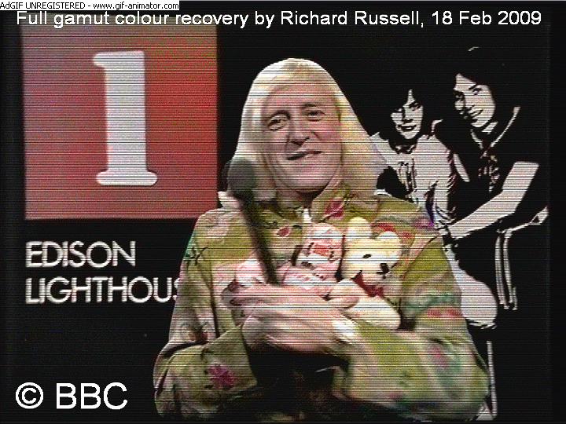
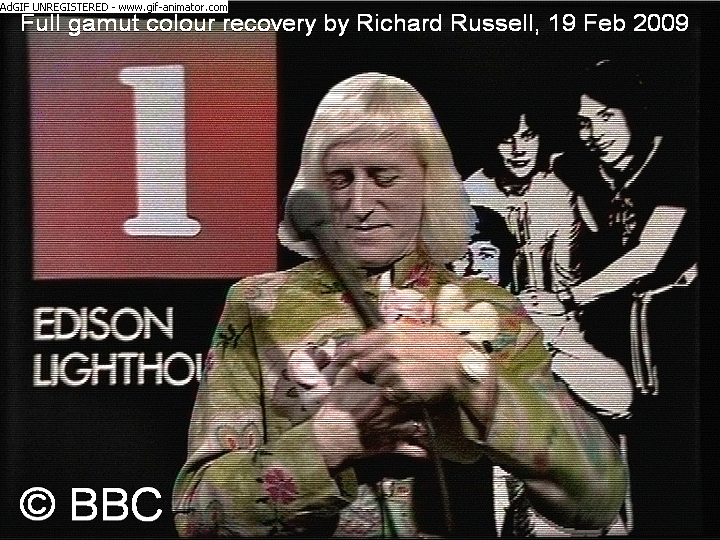
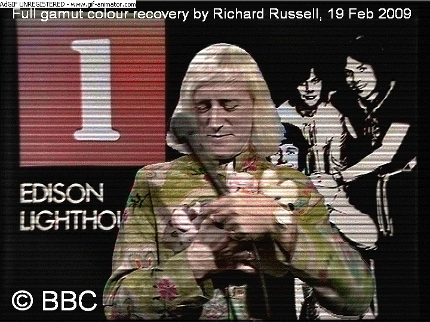

Have tried out my method on another frame from the same sequence, 3 frames later than the previous one.
The results are shown below:
Original Frame (C) BBC
Undistorted Frame (C) BBC
Field 1 (C) BBC
Field 2 (C) BBC
Here is an animated GIF of the recolourised fields, showing clear movement between them:
This is obviously only a partial separation.
It may be possible to refine my filter-pair to achieve a better separation; though I suspect a 2k scan would be required to get a really significant improvement.
How I did it:
Whilst looking into various different surface-modelling techniques, I came across the idea of piecewise polynomials.
These are like a mechano set of polynomial functions, which you can connect together to model almost any distortion you can think of.
They provide a much more accurate modelling solution than using a single polynomial to fit the entire surface.
I realised this would be a very good solution to apply to distorted film recordings, and luckily for me someone had already developed software to apply this technique in the form of an elastic B-spline model.
This software is ImageJ, with plugins UnwarpJ and BUnwarpJ, and was developed for bio-medical imaging.
You feed the plugin two images, and it generates an elastic B-spline deformation field to map one image onto the other. This process can take anything from 5 minutes to an hour depending how accurate you wish it to be.
Once generated, the elastic field parameters can be saved, and then applied to other images.
It can be applied over multiple images using ImageJ's macro scripting language, and it takes about a second to process each frame.
With these TOTP frames I had a reference VT image: so I was able to use UnwarpJ to cross-match this with the distorted FR frame, and generate the undistort field.
I've found that the vertical distortion seems to be quite stable over many hundreds of frames: so I was able to use the exact same undistort parameters on both the frames I've processed so far (as well as several others I've not yet published).
Should you not have a VT reference, it would be necessary to use the csv data from Richard Russell's software to produce your undistort function.
At present Richard is using a single polynomial model in his Custom Distort utility.
This presents two problems:
1) How do we invert Richard's vector field? This would be necessary to create the inverse transform necessary to undistort a source frame.
To do this accurately requires a coordinate frame transformation to match the coordinate system in the distorted surface.
The only way to do this is to solve both the cubic modelling equations simultaneously, which is mathematically non-trivial.
2) How do we convert the single polynomial model into an elastic B-spline model?
For now these problems could be solved by using Custom Reference to apply Richard's distortion to the file uref.bin.
This could then be cross-matched with an undistorted version of uref.bin using UnwarpJ.
By doing so we solve both of the above problems. We let the ImageJ software do the hard work of converting between the models, and inverting the transform.
You can't use any old image, since we need to have enough texture information to generate a really accurate undistort field.
That's why I propose uref.bin (or vref.bin) would be the ideal image to use, since it contains exactly the right amount of detail for ImageJ to lock onto in order to generate our undistort.
Ideally it would be best to fit an elastic B-spline model directly to the csv data, without using the intermediate step of Richard's Custom Distort, and I'm currently working on a way to translate the csv data-sets into a form that BUnwarpJ can understand.
18th February 2009
Here is another example of an undistorted frame, with it's separated fields animated below: 
Here is yet another example of separated fields. If you look at it closely, you can see that the colour content is shifting position slightly between the fields. This indicates that I am achieving some useful separation of the chroma information.

30th March 2009
I've now uploaded my QBASIC software to translate data between Richard's CR program, and ImageJ.
, which duplicates the distortion in the source frame, and therefore can be used to warp urefdist.bin, vrefdist.bin and wrefdist.bin to create a custom reference for that frame.
The procedure is as follows:
1) Extract a source frame to greyscale bmp format. (I use Avisynth/VirtualDub for this purpose, along with the Rawsource plugin with FOURCC set to Y8).
2) Load this bmp into ImageJ twice, so you have two copies of the file open.
3) Select "Plugins", "Registration", "bUnwarpJ".
4) Run the CR application across the same frame, and output the csv file.
5) Run the QBASIC code: enter the name of the csv file, and a name for the output file.
6) When the output file has been written, click on the 6th icon from the left on the lower toolbar of ImageJ's main module.
7) Select "Convert Transformation To Elastic", and open the output file. Select a name for the elastic transformation file, then set the B-Spline interval (higher values give more accurate results, but also larger file sizes).
8) Wait for the file to be written, then select "Load Elastic Transform" and open it.
This will apply the transform to the source frame, which takes a few seconds.
9) Save the undistorted source frame as a bmp using ImageJ's main toolbar. (N.B. Make sure you save the correct copy of the source frame, as the undistort will only have been applied to one of the two open copies.)
10) Convert the bmp you just made into a raw headerless image file (I use PaintShopPro for this purpose).
11) Open the raw file with the CR software and run in single frame mode.
12) Check the diagnostic views to see how successful the undistort process has been.
You can apply the same elastic undistort transform to multiple frames, using ImageJ's macro language; though you would have to first convert them to an image sequence.
If you apply the undistorts recursively (i.e. follow the above procedure several times over, writing new csv files each time), then the undistortion at first improves with each pass. Unfortunately it soon reaches a point where it starts to get worse again, and I still have further work to do if I'm going to reach the goal of zero residual distortion.
N.B. My QBASIC code is not very well written (e.g. it uses strings where I should be using other variable types); but I haven't had time to tidy it up yet. Also I haven't done any programming for over a decade: so my software skills are extremely rusty!
Have tried out my method on another frame from the same sequence, 3 frames later than the previous one.
The results are shown below:
Here is an animated GIF of the recolourised fields, showing clear movement between them:
This is obviously only a partial separation.
It may be possible to refine my filter-pair to achieve a better separation; though I suspect a 2k scan would be required to get a really significant improvement.
How I did it:
Whilst looking into various different surface-modelling techniques, I came across the idea of piecewise polynomials.
These are like a mechano set of polynomial functions, which you can connect together to model almost any distortion you can think of.
They provide a much more accurate modelling solution than using a single polynomial to fit the entire surface.
I realised this would be a very good solution to apply to distorted film recordings, and luckily for me someone had already developed software to apply this technique in the form of an elastic B-spline model.
This software is ImageJ, with plugins UnwarpJ and BUnwarpJ, and was developed for bio-medical imaging.
You feed the plugin two images, and it generates an elastic B-spline deformation field to map one image onto the other. This process can take anything from 5 minutes to an hour depending how accurate you wish it to be.
Once generated, the elastic field parameters can be saved, and then applied to other images.
It can be applied over multiple images using ImageJ's macro scripting language, and it takes about a second to process each frame.
With these TOTP frames I had a reference VT image: so I was able to use UnwarpJ to cross-match this with the distorted FR frame, and generate the undistort field.
I've found that the vertical distortion seems to be quite stable over many hundreds of frames: so I was able to use the exact same undistort parameters on both the frames I've processed so far (as well as several others I've not yet published).
Should you not have a VT reference, it would be necessary to use the csv data from Richard Russell's software to produce your undistort function.
At present Richard is using a single polynomial model in his Custom Distort utility.
This presents two problems:
1) How do we invert Richard's vector field? This would be necessary to create the inverse transform necessary to undistort a source frame.
To do this accurately requires a coordinate frame transformation to match the coordinate system in the distorted surface.
The only way to do this is to solve both the cubic modelling equations simultaneously, which is mathematically non-trivial.
2) How do we convert the single polynomial model into an elastic B-spline model?
For now these problems could be solved by using Custom Reference to apply Richard's distortion to the file uref.bin.
This could then be cross-matched with an undistorted version of uref.bin using UnwarpJ.
By doing so we solve both of the above problems. We let the ImageJ software do the hard work of converting between the models, and inverting the transform.
You can't use any old image, since we need to have enough texture information to generate a really accurate undistort field.
That's why I propose uref.bin (or vref.bin) would be the ideal image to use, since it contains exactly the right amount of detail for ImageJ to lock onto in order to generate our undistort.
Ideally it would be best to fit an elastic B-spline model directly to the csv data, without using the intermediate step of Richard's Custom Distort, and I'm currently working on a way to translate the csv data-sets into a form that BUnwarpJ can understand.
18th February 2009
Here is another example of an undistorted frame, with it's separated fields animated below:
Here is yet another example of separated fields. If you look at it closely, you can see that the colour content is shifting position slightly between the fields. This indicates that I am achieving some useful separation of the chroma information.

30th March 2009
I've now uploaded my QBASIC software to translate data between Richard's CR program, and ImageJ.
There are 3 versions of the program:
1)
2)
3)
The following software must be downloaded to do the actual undistort transformation:
1) ImageJ from here: http://rsbweb.nih.gov/ij/download.html
2) bUnwarpJ_.jar from http://biocomp.cnb.uam.es/~iarganda/bUnwarpJ/, which should then be copied into the plugins folder of ImageJ.
The procedure is as follows:
1) Extract a source frame to greyscale bmp format. (I use Avisynth/VirtualDub for this purpose, along with the Rawsource plugin with FOURCC set to Y8).
2) Load this bmp into ImageJ twice, so you have two copies of the file open.
3) Select "Plugins", "Registration", "bUnwarpJ".
4) Run the CR application across the same frame, and output the csv file.
5) Run the QBASIC code: enter the name of the csv file, and a name for the output file.
6) When the output file has been written, click on the 6th icon from the left on the lower toolbar of ImageJ's main module.
7) Select "Convert Transformation To Elastic", and open the output file. Select a name for the elastic transformation file, then set the B-Spline interval (higher values give more accurate results, but also larger file sizes).
8) Wait for the file to be written, then select "Load Elastic Transform" and open it.
This will apply the transform to the source frame, which takes a few seconds.
9) Save the undistorted source frame as a bmp using ImageJ's main toolbar. (N.B. Make sure you save the correct copy of the source frame, as the undistort will only have been applied to one of the two open copies.)
10) Convert the bmp you just made into a raw headerless image file (I use PaintShopPro for this purpose).
11) Open the raw file with the CR software and run in single frame mode.
12) Check the diagnostic views to see how successful the undistort process has been.
You can apply the same elastic undistort transform to multiple frames, using ImageJ's macro language; though you would have to first convert them to an image sequence.
If you apply the undistorts recursively (i.e. follow the above procedure several times over, writing new csv files each time), then the undistortion at first improves with each pass. Unfortunately it soon reaches a point where it starts to get worse again, and I still have further work to do if I'm going to reach the goal of zero residual distortion.
N.B. My QBASIC code is not very well written (e.g. it uses strings where I should be using other variable types); but I haven't had time to tidy it up yet. Also I haven't done any programming for over a decade: so my software skills are extremely rusty!